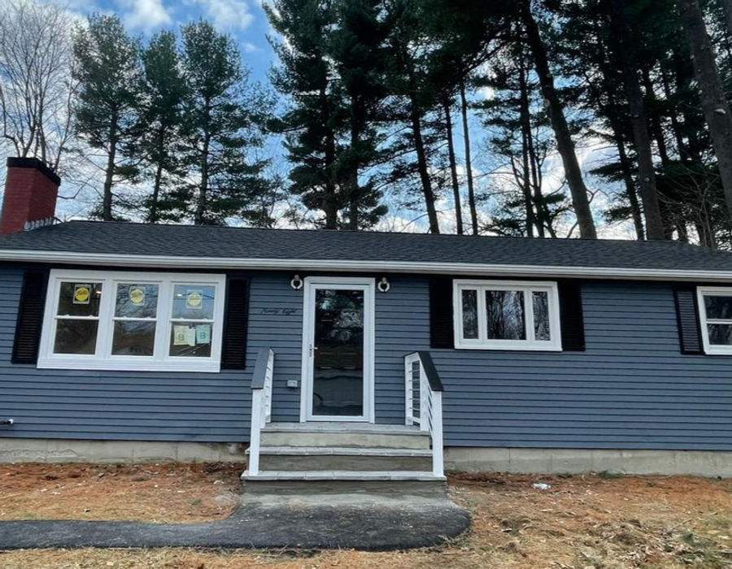
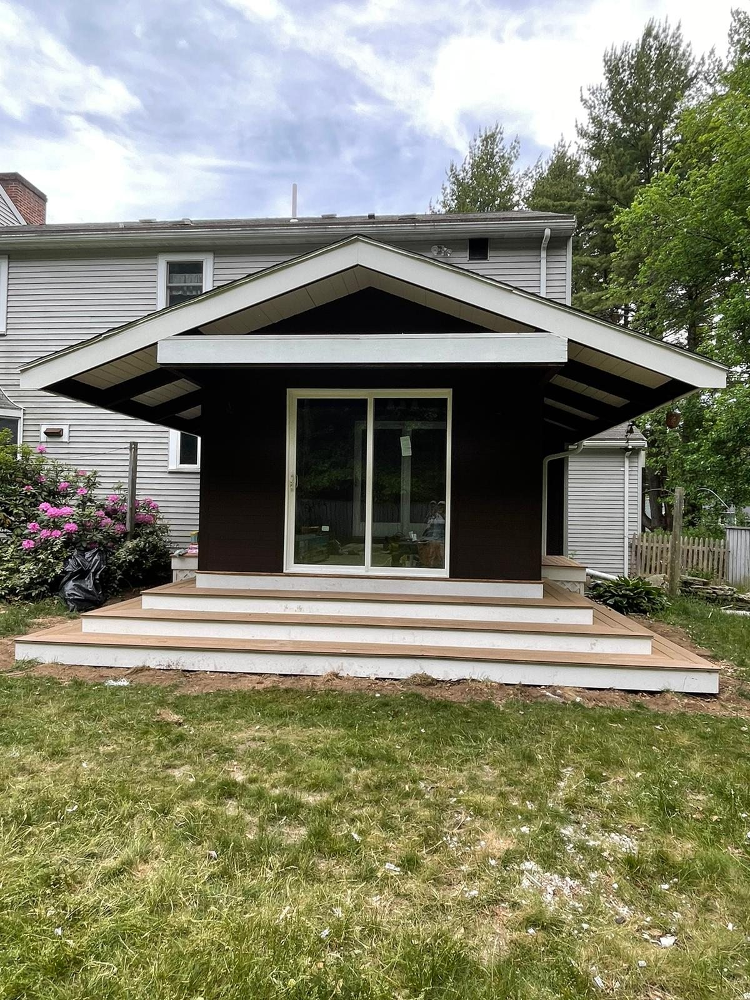

Clean, modern, professionally applied finishes that refresh and protect your property.
- Painting -
Refresh and protect your home with professional interior and exterior painting. SS Renovations Group serves homeowners across Massachusetts with careful surface preparation, clean application and clear communication from the initial estimate through the final walkthrough.
Get Free Estimate
A durable finish starts before the first coat. Depending on the project, preparation may include protecting floors and furniture, cleaning surfaces, patching minor imperfections, sanding, caulking, priming and applying the agreed finish coats using brush, roller or spray application. The written estimate identifies the surfaces, preparation and products included.
Massachusetts weather exposes exterior surfaces to moisture, temperature changes and seasonal wear. Proper preparation and compatible coatings help protect siding, trim and other painted surfaces. We evaluate the existing condition before recommending the project scope.
- What We Offer -
Transform your living spaces with clean, modern, and professionally applied finishes that reflect your style and improve everyday comfort.
Protect your property from the elements while dramatically improving curb appeal, with finishes designed to withstand New England weather.
Create a professional, welcoming environment for customers, tenants, and employees with our commercial painting services.
- Recent Work -
Tap any photo to view the full gallery →
Also updating your floors? Explore our flooring services, or see the towns we serve on our service area page, including Milford and Framingham.
- FAQ -
Pricing depends on surface area, preparation, access, number of coats and product selection. We provide a free estimate based on the actual project.
Timing varies by surface, coating, exposure and condition. Peeling, cracking, fading or failed caulk are signs that an evaluation may be needed.
Yes, cabinet painting is part of our services, including spray-applied finishes for a smooth, even result.
We work with trusted brands such as Sherwin-Williams and Benjamin Moore, selected based on the surface, finish and project requirements.
Yes. SS Renovations Group offers a workmanship warranty of 3 to 6 months on painting projects.
Tell us about your painting project and we'll get back to you within 24 hours.